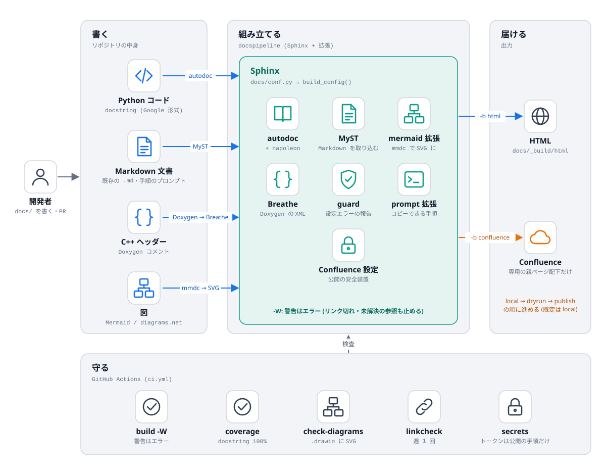

設計¶
全体の流れ¶

「書く」ものを、Sphinx と拡張が「組み立て」、HTML と Confluence に「届ける」。下の「守る」は、CI が毎回確かめる項目。 青い矢印は入力、オレンジは公開の経路を表す。
図は diagrams.net で開ける .drawio と、書き出した .drawio.svg の両方をリポジトリに置く。
生成の仕方と、図の足し方は 拡張のしかた を参照。docspipeline check-diagrams が、書き出しの漏れを確認する。
設計方針¶
既存の Markdown 文書を捨てない。 Sphinx 側で Markdown を読めるようにする (MyST)。 読み物は Markdown (Mermaid の図つき) で書き、API リファレンスだけを reStructuredText で書く。
生成物はコードの隣に置く。 各リポジトリの
docs/にconf.pyを置き、共通の設定はdocspipeline.config.build_config()から読み込む。公開は最後の工程。 既定は
localモードで、ネットワークにつながない。秘密情報は環境変数のみ。 API トークンを設定ファイルや文書に書かない。出力からも伏せる。
公開モード¶
公開は、段階を 一つずつ 進める。既定は local。環境変数の不足や接続テストの失敗は、その場で止まる。

依存の向き¶
docspipeline のモジュールは、Sphinx に依存するかどうかで二つに分かれる。
core は Sphinx が無い環境でも動く。Sphinx を import してよいのは、拡張だけ。

実際の依存は、docspipeline map docspipeline で機械的に読み取れる (機械の地図)。
tests/test_structure_map.py が、この向きを検査する。
判断の記録¶
Doxygen と Sphinx の連携方式¶
Breathe を採用した。
Breathe は Doxygen の XML を Sphinx の指示子 (
doxygenclassなど) で取り込む。 取り込む対象を文書の側で選べるので、公開したい API だけを出せる。HTML をそのまま埋め込む方式は、Confluence に載せられないので除いた。
ページを自動生成する方式は、生成したページの階層が Confluence の親ページ配下の階層と 噛み合うか、確認できていないので採らなかった。
どの方式も RAGReel の実際のコードでは試していない。ここでの比較は、サンプルのコードでの動作確認と、 各拡張の説明に基づく。
Mermaid の扱い¶
ビルド時に SVG へ変換し、HTML でも Confluence でも同じ画像を取り込む。文字は HTML ではなく SVG の
<text> で描かせる (htmlLabels: false)。画像として取り込む先で文字が消えるのを避けるため。
mmdc が無いときの挙動は docspipeline_mermaid_missing で決める。

値 |
挙動 |
|---|---|
|
コードをそのまま表示する |
|
警告を出して、コードをそのまま表示する |
|
ビルドを失敗させる。CI では |
図の色とフォントは、GitHub (Markdown のまま) と HTML で揃える。各ブロックの 1 行目に、標準の %%{init}%% の行を置き、
docspipeline check-mermaid が確かめる (--fix で入れられる)。docspipeline mermaid-style が、その行と classDef の組を表示する。
外部資料 (Z16: oh-my-mermaid) の取り込み方¶
設計書の追補にある「コードから構造図と説明の階層を作る」という考え方を、自前の docspipeline map として実装した。
外部のツールは導入していない。
取り入れたもの: 「機械が読み取った事実 (依存の地図)」と「人が書く理由 (説明)」を 分けて持つ 考え方。 地図は事実なので毎回作り直せる。説明は人が書き、地図とのずれをテストで検出する。
導入しなかった理由: 外部ツールの中身 (SKILL.md・監査結果) を、この作業では確かめていない。また
omm pushのように、 コードの情報を外部へアップロードする機能があるため、非公開のリポジトリには使えない。 自前のmapは、ローカルで読むだけで、何も送信しない。比べていないもの: Graphify (X3) の地図との比較は、Graphify を導入していないので 未実施。
出力は「下書き」として扱う。推定を含むので、人が確認してから使い、そのまま公開しない (出力の冒頭に、その旨の警告が入る)。使い方と限界は 機械の地図。
ASCII モチーフ (提案) の扱い¶
設計書の最新の追補にある「ASCII モチーフ」(蚕・繭、実装系統 B) は、実装していない。
設計書の側が「出す場所は、UI を作る段階で決める」「本文・操作部品には出さない」としている。 DocsPipeline には、いまのところ UI が無い (CLI と、Sphinx が作る静的な HTML だけ)。 出す場所が決まっていないものを、先に作らない。
上流 (ascii-sharks) の動作は、設計書の側で確認済み (型検査・ビルド成功、60fps) になった。 未確認なのは、各プロジェクトへ組み込んだときの負荷。出す場所が決まらないうちは、負荷も測れない。
UI を作る段階で採るなら、
prefers-reduced-motionでは静止画 1 枚にし、既存の色だけを使う (設計書の条件)。HTML のテーマ (furo) に足す場合は、本文の可読性とページの重さを、先に測ること。
「Copy prompt」(Z19) の取り込み方¶
手順の説明に、そのまま Claude Code に渡せるプロンプトのコピーボタンを付ける、という考え方を、自前の Sphinx 拡張
(docspipeline.prompt) として実装した。外部のコード・画像・文章は使っていない。
書き方は
.. prompt:: 題名(Markdown では、コードフェンスの言語名の代わりに{prompt}と題名を書く)。 使い方は 使い方 を参照。標準のノード (
container・paragraph・literal_block) だけで組み立てる。独自のノードを作らないので、 Confluence などのビルダーでも、題名と普通のコードブロック として出る (ボタンは出ない)。ボタンは JavaScript で足す。JavaScript が無ければ、ボタンが無いだけで、本文は読めて、選択してコピーできる。
httpsでないページ (file://など) では、navigator.clipboardの代わりに、選択してcopyの命令を使う。新しい色は足さない。テーマ (furo) の色の変数を使うので、ライトとダークの両方に合う。動きも付けない。
プロンプトに秘密情報を入れない。トークンらしき
名前=値の形があれば、値を伏せた警告を出す (-Wで失敗)。 手順書は広く読まれ、コピーされて、別の場所に貼られるため。
PDFMathTranslate (Z31) は取り込まない¶
英語の PDF 資料を、レイアウトを保って日本語にする候補。設計書の方針どおり、手元の道具としてのみ 使い、 DocsPipeline には組み込まない。
ライセンスが AGPL-3.0 で、コピーレフトが強い。このリポジトリのコード・依存・CI に入れると、 このリポジトリのライセンスの扱いに影響しうる (法的な判断はしていない)。依存に足さず、コードを写さず、呼び出しもしない。
DocsPipeline の目的 (docstring から API 文書を作り、公開する) と、直接のつながりが無い。
動作・翻訳の質・入力した PDF の扱い (外部へ送られるか) は、確かめていない。使うなら、導入前に確認する。
契約と副作用の境界 (Z39) の取り込み方¶
設計書の第 5 弾の追補 (Z39) の考え方を、このリポジトリの 設計の約束 として取り入れた。外部のコードは使っていない。
契約の欄: 主な関数に、事前条件・事後条件・不変条件を書く (契約の表)。 docstring の
Args/Raisesが事前条件、Returnsが事後条件に当たる。契約は、AI に実装や変更を頼むときの指示文になる。契約からテストを作る: 表の各行に、検証するテストを対応づけた。不変条件は、1 つの例ではなく いろいろな入力 (乱数の種を固定した 生成・総当たりとの突き合わせを含む) で確かめる (
tests/test_contracts.py)。表の関数とテストが実在することも、同じテストが確かめる。副作用の境界: 関数を、純粋 / 読み取り / 書き込み・起動の 3 層に分けた。外側の層が内側を呼ぶ。 純粋 の層は、
open・os.environ・子プロセス・ネットワークを禁じた状態で呼んでも動き、同じ入力なら同じ出力になる (違反すると、テストが失敗する)。読み取り の層は、前後でディレクトリの中身が変わらない。読む範囲の決め方: 純粋な層は仕様を読めば足りる。書き込み・起動の層と、秘密を扱う部分 (
mask_secretsなど) は、深く読む。 レビューの負担を、この線引きで減らす。
純粋な関数が、environ=None (省略すると os.environ) を許している点には、注意がいる。省略したときは純粋でなくなるので、
テストは、必ず environ を渡して確かめる。この追補を取り入れる過程で、既存の関数に契約違反は見つからなかった (3 通りの変異で、テストが失敗することは確かめた)。
使いやすさの提案 (UX1〜UX7) の取り込み方¶
設計書の側の「使いやすさの提案」(2026-11-04) は、全プロジェクト共通の 7 項目を挙げ、DocsPipeline には 「実装を始めるときに、UX1・UX2・UX4 を最初の部品として入れる」と書いている。DocsPipeline は 画面を持たない CLI なので、 画面向けの項目は、CLI に置き換えられるものだけを取り入れた。提案の根拠は、設計書の語句の数え上げで、アプリは操作されていない (この実装でも、手元の端末で動かして確かめたのは、テストが再現できる範囲まで)。
項目 |
取り込み |
中身 |
|---|---|---|
UX4 エラーの書き方の型 |
実装 |
何が起きた / なぜ / 次の一手の 3 行 ( |
UX2 進捗・取り消し・完了通知 |
実装 (CLI の範囲) |
始まり・終わり (経過時間)・ |
UX6 空状態に「次の一手」 |
実装 (CLI の範囲) |
|
UX1 取り消しと履歴 |
一部 |
画面の Undo は当たらない。代わりに 壊す操作を絞った: |
UX5 続きから再開 |
未実装 |
Sphinx の増分ビルドは、変わっていない文書を飛ばすが、中断後の再実行が続きから動くかは、確かめていない |
UX3 状態を URL に |
対象外 |
CLI に URL は無い。HTML 版は静的なので、ページごとの URL とアンカーで共有できる |
UX7 キー操作・コマンドパレット |
未実装 |
CLI のシェル補完 ( |
設計書の追補と、この実装での扱い¶
設計書の追補は、日付順に積まれている。同じ話題が複数の追補にあるときは、新しい日付を優先する。
# |
追補 |
日付 |
設計書の状態 |
この実装での扱い |
|---|---|---|---|---|
1 |
実務で運用するための拡張 |
2026-10-11 |
— |
Phase 5 (CI)・7 (更新の自動化)・ |
2 |
TakayuStudio 系 (T2・T11・T12) |
2026-10-15 |
提案 |
実装済み: 定型項目の雛形・出力形式の表・ページ末尾の出典の注記 |
3 |
外部リソース (X3・X7・X16・Y9) |
2026-10-22 |
提案 |
X16 (番号つきの図) は実装。X3 は、自前の |
4 |
外部リソース 第 2 弾 (Y9) |
2026-10-23 |
提案 |
取り込んでいない (同上) |
5 |
外部リソース 第 3 弾の続き (Z16) |
2026-10-27 |
提案 |
自前の |
6 |
ASCII モチーフ |
2026-10-27 |
提案・未実装 |
実装していない (出す場所が決まっていない) |
7 |
第 4 弾 (Z19・Z31) |
2026-10-30 |
提案・未実装 |
Z19 は実装 ( |
8 |
第 5 弾 (Z39・副作用の境界・読む範囲) |
2026-11-02 |
提案・未実装 |
実装 (上の節と 契約の表) |
9 |
使いやすさの提案 (UX1〜UX7) |
2026-11-04 |
提案・未実装 |
一部実装: UX4・UX2・UX6 (CLI の範囲)。UX1 は一部、UX5・UX7 は未実装、UX3 は対象外 (上の節) |
設計書の「追補の索引」が、状態の語彙の元。進み具合は、設計書の側の IMPLEMENTATION_PROGRESS を参照 (このリポジトリには、含まれない)。
よくある誤り¶
docs/conf.pyで例外を投げる実装にすると、Sphinx がスタックトレースつきの内部エラーとして出す。 設定の誤りはdocspipeline_config_errorに入れて、docspipeline.guardが報告する。core のモジュールから、Sphinx を import するモジュールを import する。
docspipelineの CLI は、 Sphinx が入っていない環境でも動く (init・coverage・map・doctor)。Sphinx に依存してよいのは 拡張 (guard・mermaid・doxygen・prompt) だけで、mmdcの探索のように両方が使う部品は、Sphinx に依存しないdocspipeline.mmdcに置く。tests/test_structure_map.pyが検査する。confluence_*の設定は、未設定だと同名の環境変数から補われる。公開の可否に関わる項目は、docspipeline.confluence.sphinx_settings()がすべて明示している。